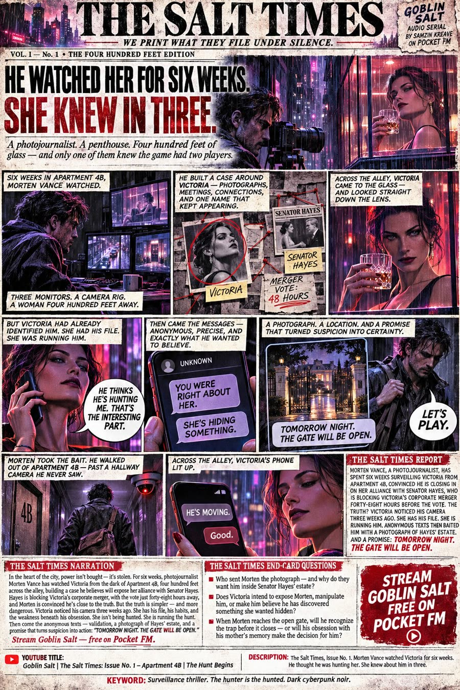
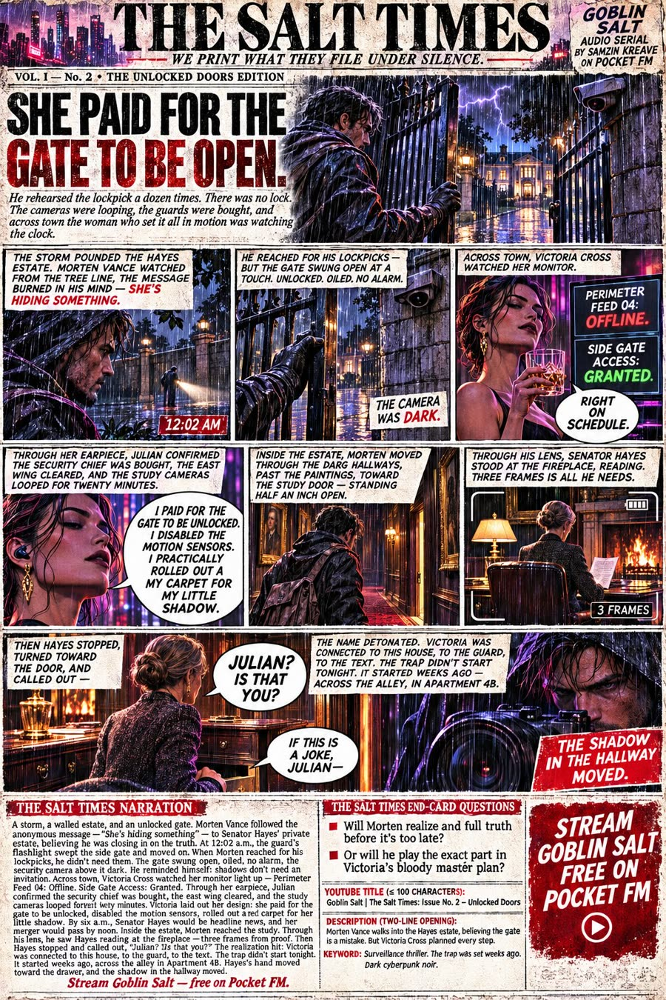
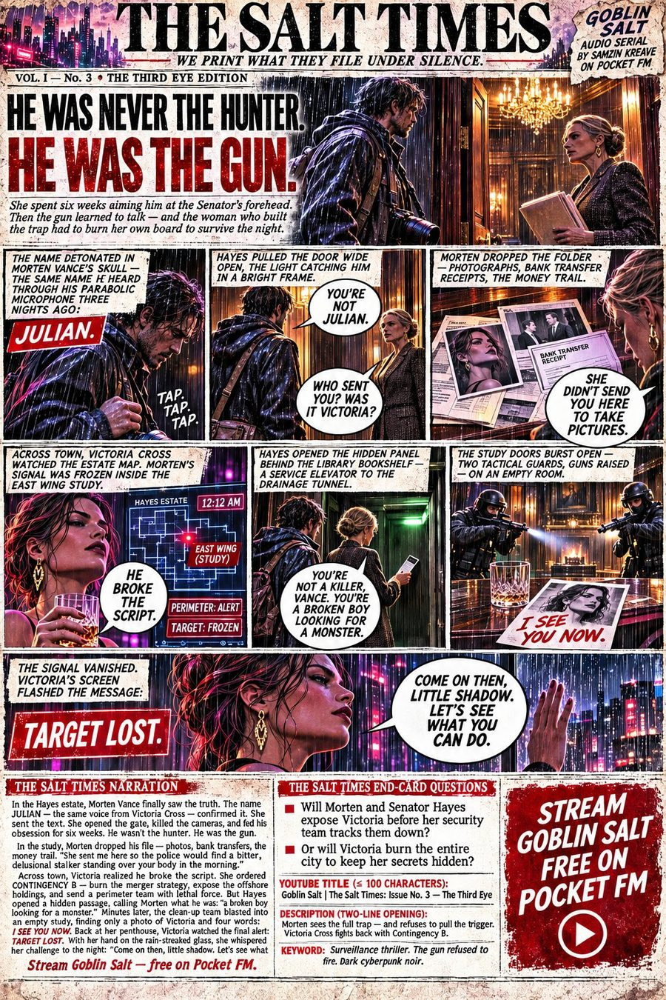
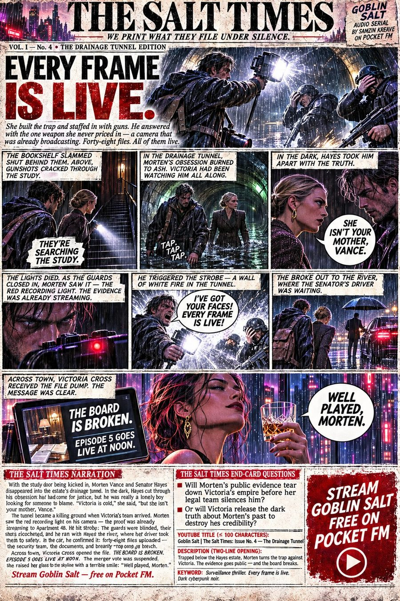
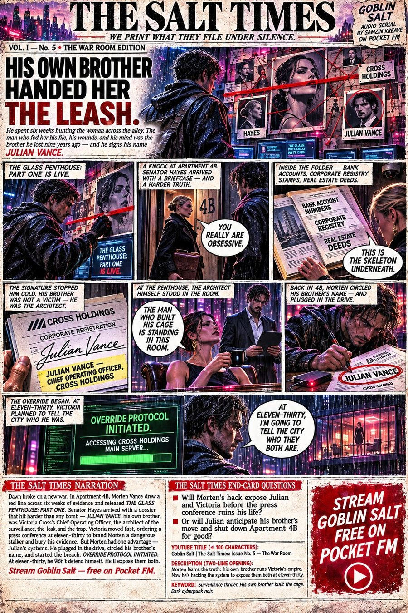
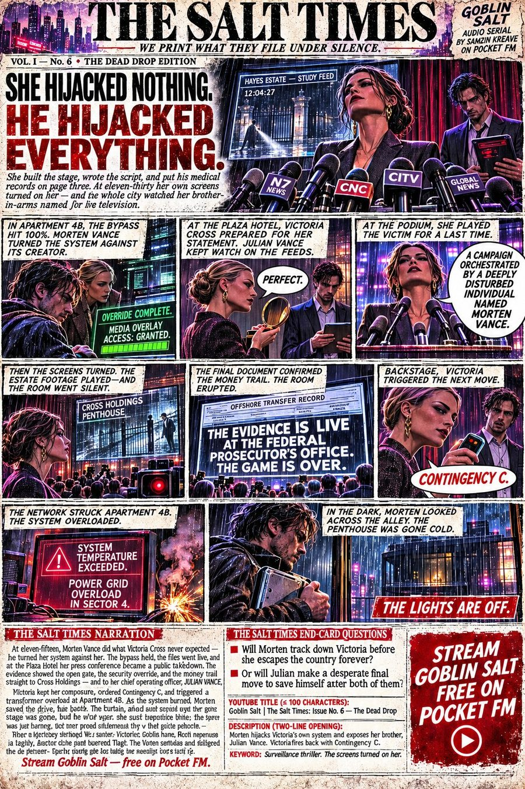
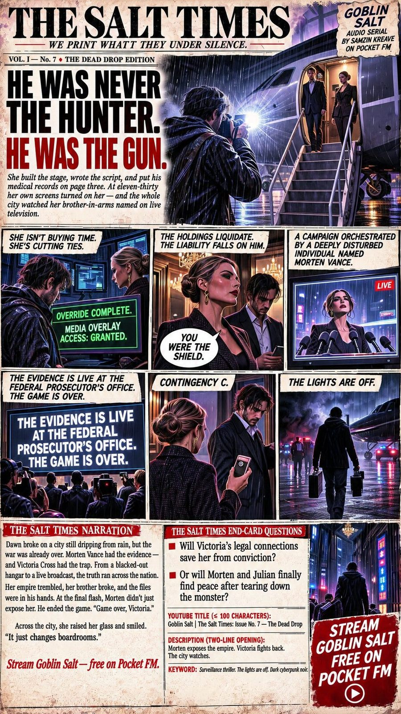

Goblin Salt · Est. Nov 9, 2026
THE SALT TIMES
We print what they file under silence.
Goblin Salt · The PaperThe rogue broadsheet
In the world of GOBLIN SALT, the Gazette Holding Trust has owned the city’s printing plates for fifty years — and buries what it prints. THE SALT TIMES is the paper that got away: case files, surveillance logs, casualty lists, set in black ink on salt-stained newsprint. Every issue is a narrated video edition of one episode of GOBLIN SALT, streaming free on Pocket FM.
| No. | Edition | Headline | Status |
|---|---|---|---|
| 1 | The Four Hundred Feet Edition — Ep. 1 “Apartment 4B” | HE WATCHED HER FOR SIX WEEKS. SHE KNEW IN THREE. | Nov 9, 2026 |
| 2 | The Unlocked Doors Edition — Ep. 2 “Unlocked Doors” | SHE PAID FOR THE GATE TO BE OPEN. | Nov 10, 2026 |
| 3 | The Third Eye Edition — Ep. 3 “The Third Eye” | HE WAS NEVER THE HUNTER. HE WAS THE GUN. | Nov 10, 2026 |
| 4 | The Drainage Tunnel Edition — Ep. 4 “The Drainage Tunnel” | EVERY FRAME IS LIVE. | Nov 10, 2026 |
| 5 | The War Room Edition — Ep. 5 “The War Room” | HIS OWN BROTHER HANDED HER THE LEASH. | Nov 10, 2026 |
| 6 | The Dead Drop Edition — Ep. 6 “The Dead Drop” | SHE HIJACKED NOTHING. HE HIJACKED EVERYTHING. | Nov 10, 2026 |
| 7 | The Flat Line Edition — Ep. 7 “Flat Line” | FACE TO FACE. ONE FLASH. GAME OVER. | Nov 10, 2026 |
The EditionsFront pages
Every edition of the Times, as printed. These same front pages are the collectible editions on Zora — the still is the edition; the narrated video edition runs on YouTube.

HE WATCHED HER FOR SIX WEEKS. SHE KNEW IN THREE.

SHE PAID FOR THE GATE TO BE OPEN.

HE WAS NEVER THE HUNTER. HE WAS THE GUN.

EVERY FRAME IS LIVE.

HIS OWN BROTHER HANDED HER THE LEASH.

SHE HIJACKED NOTHING. HE HIJACKED EVERYTHING.

FACE TO FACE. ONE FLASH. GAME OVER.

THE LIGHTS ARE OFF.
Stream GOBLIN SALT free on Pocket FM → Collect the front pages on Zora → Watch the editions on YouTube →